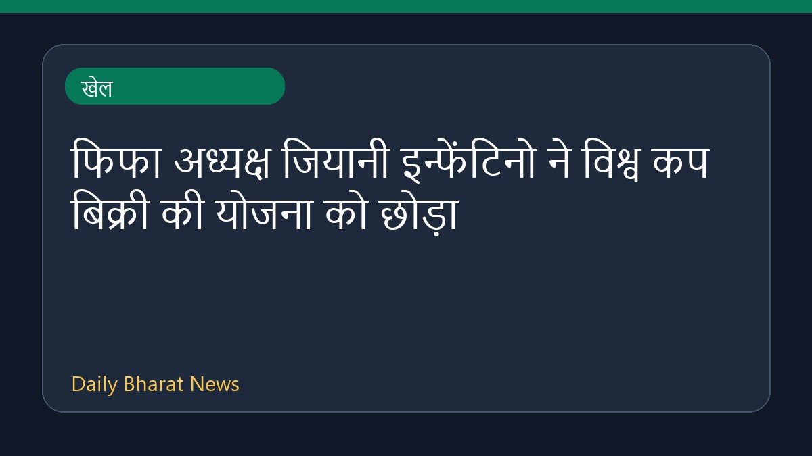

फिफा अध्यक्ष जियानी इन्फेंटिनो ने विश्व कप बिक्री की योजना को छोड़ा

व्यापक विरोध के बाद फिफा अध्यक्ष जियानी इन्फेंटिनो ने विश्व कप के निजी निवेश और बिक्री के प्रस्ताव को रद्द कर दिया है। इस फैसले का फुटबॉल ऑस्ट्रेलिया और एएफसी ने स्वागत किया है। इसके अलावा, यूके के प्रधानमंत्री एंडी बर्नहम ने इन्फेंटिनो से इस्तीफा देने की मांग की है, जिससे वह ऐसा करने वाले पहले प्रमुख देश के नेता बन गए हैं। इस मामले में यूईएफए और उसके 55 राष्ट्रीय संघों की ओर से भी बयान जारी किया गया है।
मूल स्रोत: Sports News Sources
Infantino scraps FIFA World Cup sell-off plan after backlash - espn.in ↗
Infantino scraps FIFA World Cup sell-off plan after backlash - espn.in ↗